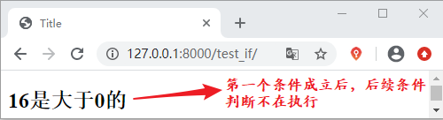
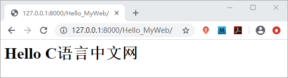
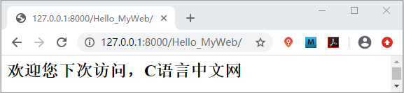

Django if标签详解
本节继续讲解 Django 的模板语言，Django 内置了许多标签用于简化模板的开发过程，同时 Django 也支持自定义标签，这极大的方便了 Web 开发者，下面我们依次进行介绍。
在这里我们介绍另外一种方式来简单的演示如何使用嵌套 if 标签，在 views.py 文件中添加如下代码：
当我们将 printable 的值改为 False 的时候，则会得到如下输出：
1. 模板标签
Django 的模板系统对标签的解释是在渲染的过程中提供相应的逻辑，比如Python 语言中 if...else 语句、with 语句、以及 for 循环等，这些在 Django 的模板系统中都有对应的标签，不过稍微复杂些，它们的使用方式如下所示：{% tag %}
不过有些标签需要开始标签和结束标签，也有的标签不需要，下面我们对这两种类型的常见标签进行讲解。1) 判断逻辑的 if 标签
我们知道 if 在 Python 语言中是判断条年是否成立的，在模板标签中它们作用是类似的，如果条件成立则显示块中的内容。模板标签规定了 if 需要与 endif 成对出现 ，使用的方式如下所示：
{% if 条件表达式1 %}
......
{% elif 条件表达式2 %}
......
{% elif 条件表达式3 %}
......
{% else %}
......
{% endif %}
注意：模板标签内部的两边空格不要省略。
那 if 标签具体又是如何使用的呢，下面我们通过一个简单的例子来看一下：
#在views.py 中添加如下代码
def test_if(request):
dic={'x':2**4}
return render(request,'test_if.html',dic)
在 templates 目录中创建 test_if.html 文件 ，并在body中添加以下代码
{% if x > 0 %}
<h2>{{ x }}是大于0的</h2>
{% elif x == 0%}
<h3>{{ x }}是等于0的</h3>
{%elif x < 0 %}
<h4>{{ x }}是小于0的</h4>
{% endif %}
最后在 urls.py 文件中配置路由如下所示：path('test_if/',views.test_if)
最终结果可想而知，通过访问 127.0.0.1:8000/test_if 会得到如下显示：

图1：模板标签 if 运行效果图
提示：elif 和 else 这两个标签是可选的，elif 标签可以不止一个，但是 else 标签只有一个，同时也可以都不出现在 if 标签中，只使用 if 与 endif。
如果当判断的条件太多时，为了避免过多的连接操作符的出现，同样可以考虑使用嵌套的 if 标签，格式如下所示：
{% if 条件表达式1 %}
{% if 条件表达式 %}
......
{% elif 条件表达式2 %}
......
{% else %}
......
{% endif %}
{% endif %}
在这里我们介绍另外一种方式来简单的演示如何使用嵌套 if 标签，在 views.py 文件中添加如下代码：
from django.template import Template,Context#调用template、以及上下文处理器方法
def Hello_MyWeb(request):
#调用template()方法生成模板
t=Template("""
{% if web.name == 'C语言中文网' %}
{% if printable %}
<h1>Hello C语言中文网</h1>
{% else %}
<h2>欢迎您下次访问，C语言中文网</h2>
{% endif %}
{% endif %}
""")
c= Context({'web':{'name':'C语言中文网'}, 'printable' : True }) #Context必须是字典类型的对象，用来给模板传递数据
html=t.render(c)
return HttpResponse(html)
然后我们在 urls.py 文件中为 hello_MyWeb() 函数配置路由映射关系，如下所示：
path('Hello_MyWeb/',views.Hello_MyWeb)
最终我们会得到如下所示的输出：

图1：if 标签嵌套使用
图1：if 标签嵌套使用
当我们将 printable 的值改为 False 的时候，则会得到如下输出：

图2：if 标签嵌套使用
本节给大家详细的讲解了 Django 模板标签中的 if 标签的使用方法。在学习的过程一定要懂得融会贯通 ，因为 Django 是基于 Python 的 Web 框架，它纵然有自己的特点，但是万变不离其宗，所以学会结合 Python 语言去学习会有利我们快速理解与掌握相关的知识。图2：if 标签嵌套使用
关注公众号「站长严长生」，在手机上阅读所有教程，随时随地都能学习。内含一款搜索神器，免费下载全网书籍和视频。

微信扫码关注公众号